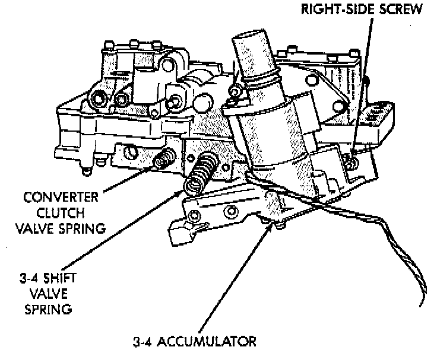
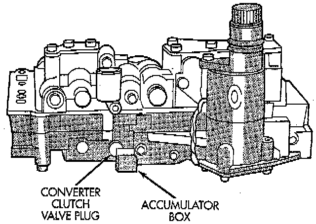

3-4 Accumulator Assembly 2

1. Position converter clutch valve and 3-4 shift valve springs in housing.
2. Loosely attach accumulator housing with right-side screw. Install only one screw at this time as accumulator must be free to pivot upward for ease of installation.
3. Install 3-4 shift valve and spring.
4. Install converter clutch timing valve and spring.
5. Position plug on end of converter clutch valve spring. Then compress and hold springs and plug in place with fingers of one hand.
6. Swing accumulator housing upward over valve springs and plug.

7. Hold accumulator housing firmly in place and install remaining two attaching screws. Be sure springs and clutch valve plug are properly seated. Tighten screws to 4 Nm (35 inch lbs.).